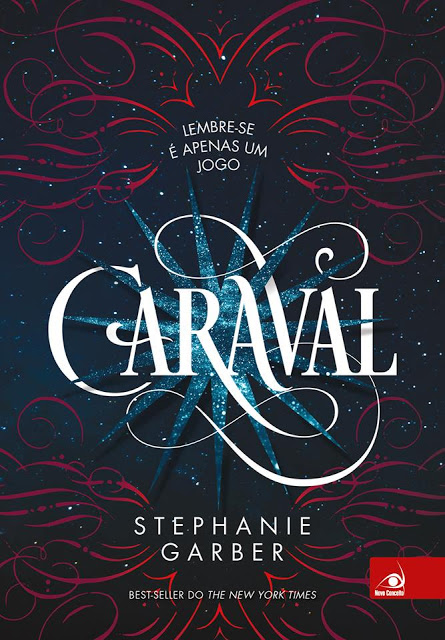

|
A Torre Acima do Véu
Autora: Roberta Spindler
Quando uma densa e venenosa névoa surge misteriosamente, pânico e morte tomam conta do planeta.
Os poucos sobreviventes se refugiam no topo dos megaedifícios e arranha-céus das megalópoles.
Cinquenta anos se passam na megacidade Rio-Aires, Beca vive do resgate de recursos há muito abandonados nos andares
inferiores, junto com seu pai e seu irmão. A profissão, perigosa por natureza, torna-se ainda mais letal quando
ela participa de uma negociação traiçoeirae se vê cada vez mais envolvida em perigos e segredos que ameaçam muito mais
do que sua vida ou a de sua família.

|
|
Maze Runner - Correr ou Morrer
Autor: James Dashner
Ao acordar dentro de um escuro elevador em movimento, Thomas está com sua memória completamente apagada.
Mas ele não está sozinho. Quando a caixa metálica chega a seu destino e as portas se abrem, Thomas se vê rodeado
por garotos. "Bem-vindo à Clareira, fedelho". A Clareira, um espaço aberto cercado por muros gigantescos.
Assim como Thomas, nenhum deles sabe como foram parar ali, nem por quê. Sabem apenas que todas as manhãs as
portas de pedra de um Labirinto que existe naquele mesmo lugar se abrem e ao anoitecer se fecham.
Porém um fato altera a rotina do lugar: chega uma garota na Clareira.
Thomas será mais importante do que imagina. Mas para isso terá de descobrir os sombrios segredos guardados em sua
mente e correr... correr muito.
|
|  |
Caraval
Autor: Stephanie Garber
O maior espetáculo na terra ou no mar. Aqui vocês conhecerão mais maravilhas do que a maioria das pessoas
vêem em toda uma vida.
Mas, antes que entrem no nosso mundo, devem recordar que tudo é um jogo. O que acontece atrás destes portões
pode assustar ou encantar, mas não deixem que nada os engane. Tentaremos convencer vocês de que é real,
porém tudo é teatro.
Um mundo feito de faz de conta. Então, apesar de querermos vê-los arrebatados, cuidado; não se deixem levar
longe demais.

|
 |
Mundo Novo
Autor: Chris Weitz
Depois que um misterioso vírus erradicou toda a população exceto os adolescentes, os jovens dividem-se em
tribos para sobreviver. Jefferson, o inseguro líder da tribo da Washington Square, e Donna, a garota por
quem ele está secretamente apaixonado. Porém, quando outro integrante do bando descobre uma pista que
pode levar à cura da doença, eles partem em uma viagem arriscada para salvar o que restou da humanidade.
Alternando entre os pontos de vista de Jeff e Donna, descobrimos uma Nova York muito diferente: os animais
do zoológico do Central Park agora vivem soltos na região, a Grand Central Station virou um enorme mercado…
e há tribos inimigas por toda a parte. Enquanto enfrentam todos esses perigos, Jeff tenta criar coragem para
se declarar, e Donna luta para entender seus próprios sentimentos — afinal, conforme os dias passam, a
adolescência vai ficando para trás e a Doença está cada vez mais próxima.

|
|
Sozinha no Mundo
Autor: Marcos Rey
"Pimpa, curiosa para ver a mulher recalcitrante, levantou-se. Assim podia espichar as pernas, depois de
horas de estrada. Bastou porém sair da poltrona para que o corpo de dona Aurora, como um manequim,
pendesse para o lado. (...) – Não adianta nada, filho. Esta senhora está morta". Corajosa e sem saída,
fugindo de uma assistente social, Pimpa sai em busca de "tio" Leonel. Encontrá-lo é sua única chance.
No final, Marcos Rey surpreende seu leitor, depois de deixá-lo, durante toda a leitura, apreensivo com a
situação de Pimpa.

|
|
Black Bird
Autora: Anna Carey
Uma garota acorda nos trilhos do metrô de Los Angeles sem lembrar quem é. Há uma mochila a seus pés
contendo uma troca de roupas, mil dólares em espécie, um número de telefone e a instrução “Não ligue
para a polícia” Perguntas rodopiam em sua cabeça: Quem é ela? Como chegou ali? O que ela fez? O que
significa a tatuagem de um pássaro e o código FNV02198 em seu pulso? Ela mal tem tempo para descobrir
sua identidade, e logo percebe que está sendo caçada. Precisa fugir desesperadamente.
Não sabe quem são eles, não sabe em quem confiar. Só há uma coisa que sabe com certeza: estão tentando
matá-la.
|